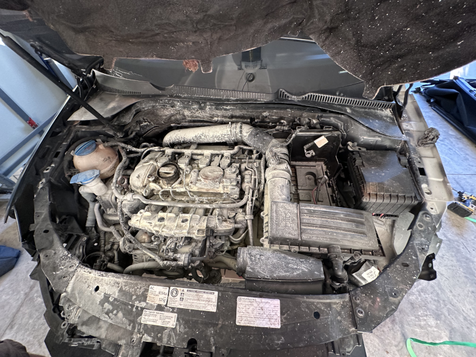
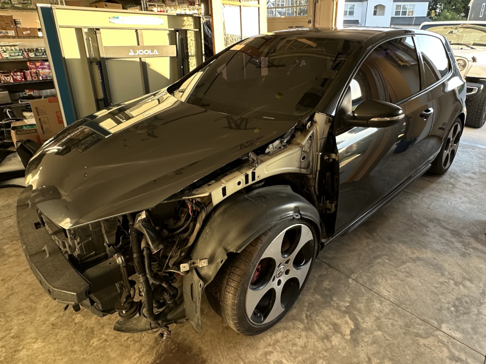
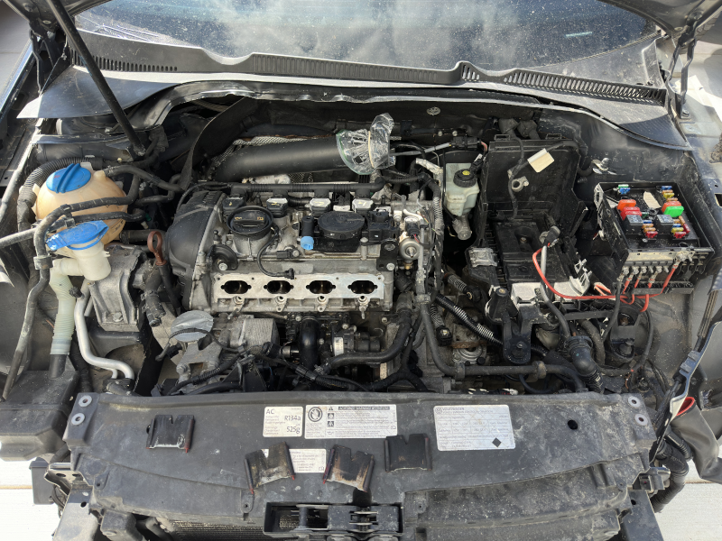
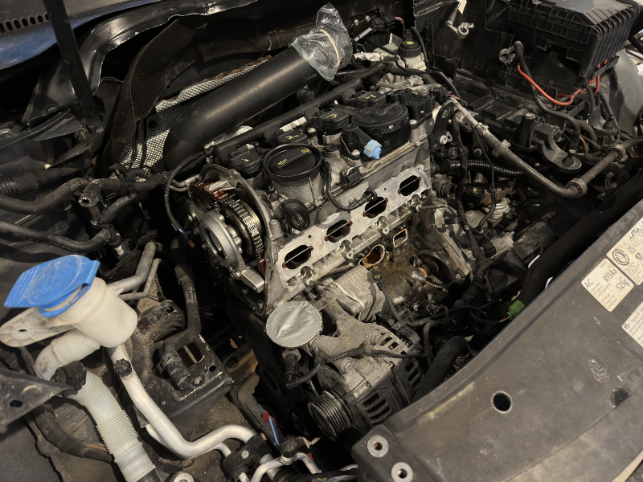
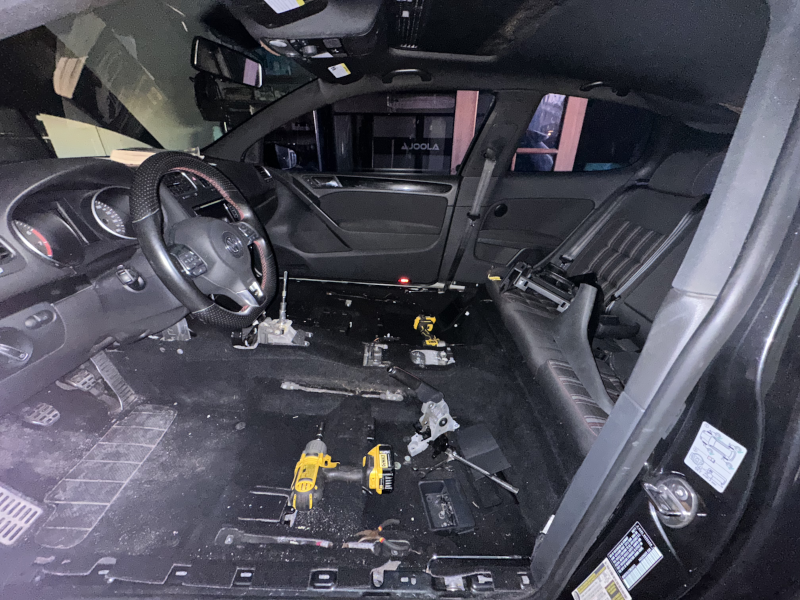

GTI Rebuild
Background
The car is reclaimed from an auction with a motor replaced. The injectors were not fully seated. Upon starting the engine, the fuel was was leaking out and ignited. A fire extinguisher put it out quickly without much damage but with a lot of residue.
October 2, 2025
I got my car in the garage. I can't make any progress until next week.
October 11, 2025
I'm back and I got the fuel injectors, air intake, etc out of the car to clean up the fire extinguisher residue. A pressure washer cleaned it up quickly after closing off the open ports.
October 12, 2025
I pulled out some more parts, the water pump and engine mount. The timing chain needs to be replaced as well as the water pump. I got some oem headlights for cheap that need cleaned and sealed. The seats were removed so I can get to the carpet and clean it.
October 15, 2025
The carpet needs cleaning and it soaked up a lot of water. I need to pull it out and clean it. I needed to pull apart a lot of my car but now I have access to the carpet so I can remove it and dry it.
